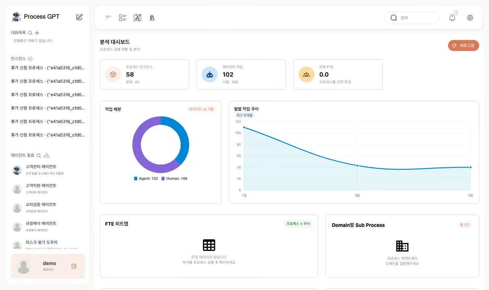
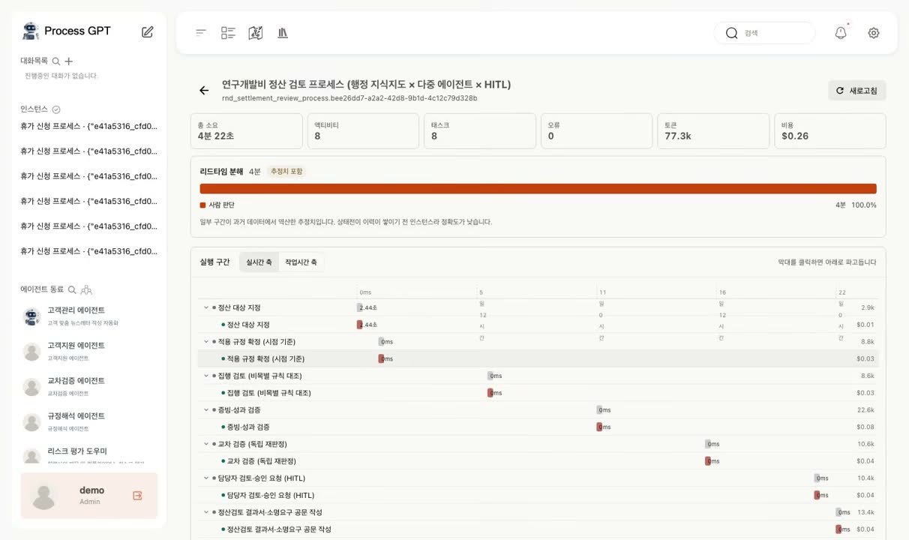
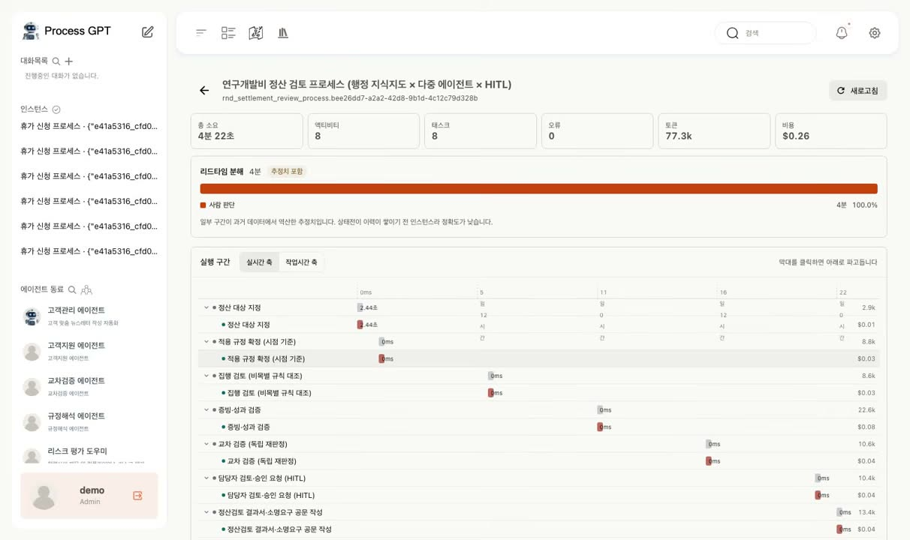
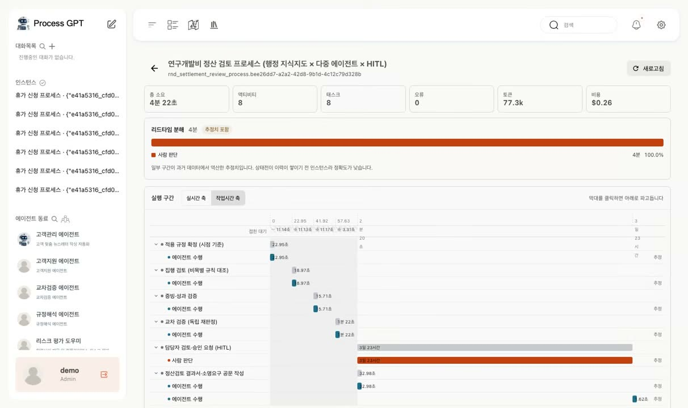
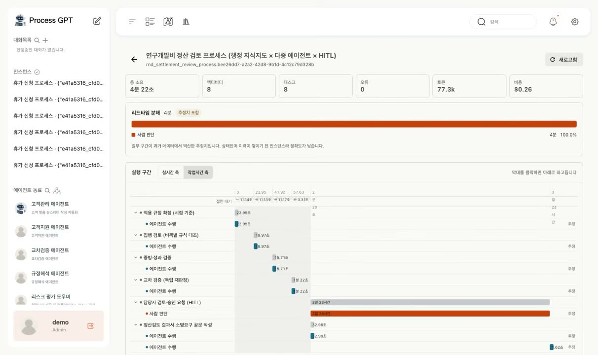
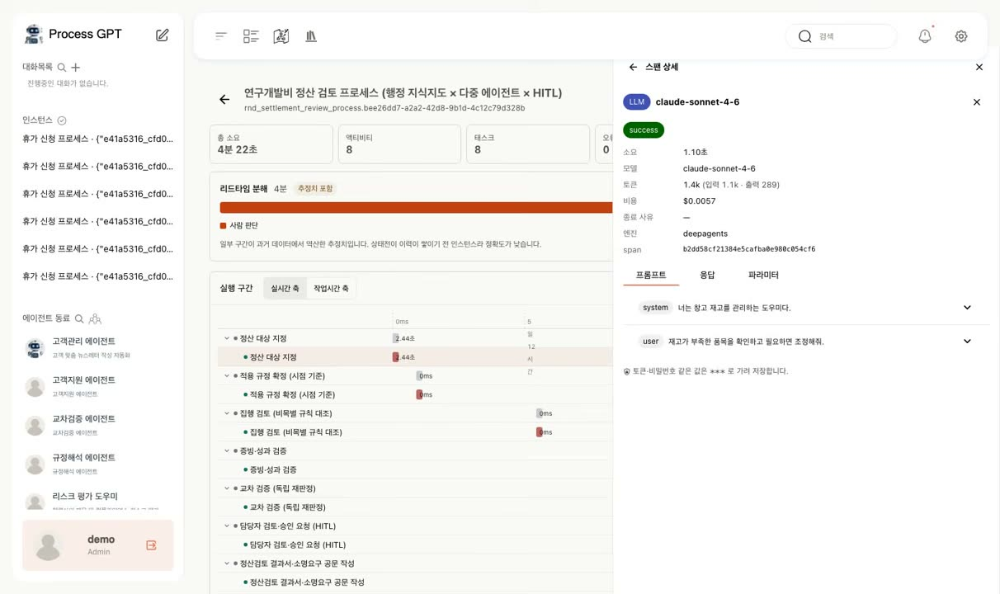
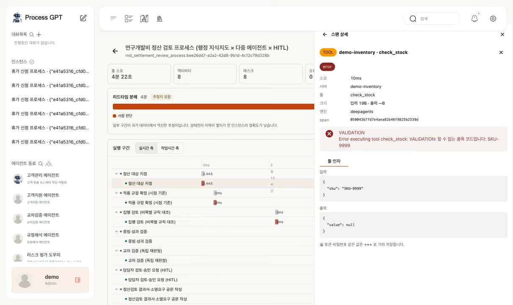

업무 지연은 어디서 발생할까? 리드타임을 나누어 병목 찾기
“이 업무는 완료까지 왜 이렇게 오래 걸릴까요?” 프로세스를 개선하려면 전체 소요 시간뿐 아니라 어느 단계에서 시간이 걸렸는지 알아야 합니다.
사람이 검토하는 단계가 긴지, 에이전트 실행이 느린지, 업무 배정 전에 대기하는 시간이 긴지에 따라 개선 방법이 달라집니다. 전체 시간만으로는 어디부터 손봐야 할지 판단하기 어렵습니다.
Process GPT 실행 프로파일러의 리드타임 분해(Lead Time Breakdown)는 전체 경과 시간을 유형별로 나누어 보여 줍니다. 이 글에서는 시간 구성 확인, 세부 실행 분석, 데이터 해석 시 주의할 점을 살펴봅니다.
1. 전체 경과 시간을 세 가지 유형으로 나눕니다
같은 3일이 걸린 업무라도 사람 판단, 에이전트 수행, 큐 대기 중 어느 구간이 긴지에 따라 개선 대상이 달라집니다.
시연 사례에서는 ‘사람 판단’으로 분류된 시간이 대부분을 차지했습니다. 이 구간에는 검토·승인 대기도 포함되므로 담당자가 계속 작업한 시간으로 해석해서는 안 됩니다. 이런 경우에는 모델 속도보다 검토와 승인 절차를 먼저 점검하는 것이 효과적입니다.

기존 분석 대시보드에서는 진행 중인 인스턴스와 사람·에이전트의 작업 비중을 확인할 수 있습니다.

시연 인스턴스의 경과 시간 4일은 화면상 ‘사람 판단’ 100.0%로 표시됩니다. 검토·승인 대기를 포함한 구간이므로 실제 작업 시간과 구분해서 해석해야 합니다.
2. 작업 시간 축으로 짧은 실행 구간을 확대합니다
실행 구간은 시간 순서에 따라 막대를 배치한 워터폴 차트로 표시합니다. 시연 데이터에서는 실행 이벤트가 기록된 구간이 전체 리드타임의 1%에도 미치지 않아, 실제 시간 간격을 그대로 표시하면 막대를 구분하기 어려웠습니다.
작업 시간 축은 이벤트가 없는 유휴 구간을 압축하고, 기록된 작업 구간을 상대적인 길이에 맞춰 확대합니다. 시연에서는 같은 데이터의 막대 너비 합이 160픽셀에서 1,400픽셀로 늘어나 세부 구간을 비교하기 쉬워졌습니다.
압축한 대기 시간은 눈금 아래 배지에 별도로 표시합니다. 사용자는 전체 경과 시간 중 얼마가 화면에서 압축되었는지 확인할 수 있습니다.
작업 시간 축은 짧은 실행 구간을 자세히 보기 위한 표시 방식입니다. 전체 소요 시간을 판단할 때는 원래 시간 축과 압축된 대기 시간도 함께 확인해야 합니다.

실제 시간 간격을 유지하면 짧은 작업 구간이 점에 가깝게 표시되어 비교하기 어렵습니다.

작업 시간 축에서는 유휴 구간을 압축해 작업 막대를 확대하고, 압축한 시간은 배지로 표시합니다.
3. 태스크와 호출 기록에서 지연 원인을 살펴봅니다
작업 시간 축으로 바꾸면 사람과 에이전트의 실행 구간을 비교하기 쉬워집니다. 시연에서는 파란색으로 표시된 에이전트 수행 구간보다 주황색으로 표시된 사람의 검토 태스크가 길게 나타납니다.
태스크 막대를 선택하면 관련 언어 모델 호출과 툴 호출을 확인할 수 있습니다. 언어 모델 호출 기록에서는 모델·소요 시간·토큰 비용을, 프롬프트 탭에서는 전달한 메시지를, 툴 호출 기록에서는 입력값과 반환 결과를 확인합니다. 인증 토큰과 비밀번호 같은 민감한 값은 저장 단계에서 마스킹합니다.
여러 실행 건을 모으면 프로세스별로 반복되는 병목 구간도 찾을 수 있습니다. 시연에서는 두 프로세스 모두 사람의 검토 단계가 가장 길게 나타났습니다. 이를 바탕으로 해당 단계의 업무량과 승인 대기 원인을 추가로 점검할 수 있습니다.

사람의 검토 태스크와 에이전트 실행 구간을 비교해 상세 점검이 필요한 단계를 찾습니다.
▶ 태스크 상세: 언어 모델과 툴 호출 기록

태스크 막대를 선택하면 관련 언어 모델 호출의 모델, 소요 시간, 토큰 비용을 확인할 수 있습니다.

툴 호출의 입력값과 반환 결과를 확인합니다. 인증 토큰과 비밀번호는 저장 단계에서 마스킹됩니다.
4. 측정값과 추정값을 구분합니다
시간을 정확히 분류하려면 시작과 완료 기록이 필요합니다. 개발 중 점검한 사람 태스크 124건 가운데 시작 이벤트가 남아 있는 것은 6건뿐이어서 기록을 보완해야 했습니다.
이후 상태 변경이 이력 테이블에 남도록 데이터베이스 트리거를 추가했습니다. 다만 새 기록 방식으로 과거에 누락된 이벤트까지 복원할 수는 없으므로, 다음 원칙을 적용했습니다.
- 다른 기록으로 역산한 시간: 측정값과 구분할 수 있도록 ‘추정치’로 표시합니다.
- 완료 근거가 없는 구간: 소요 시간을 임의로 계산하지 않고 비워 둡니다. 점검 과정에서는 누락된 종료 시점을 잘못 보완하면 사람 작업 시간이 29일로 계산되는 사례가 있었습니다.
기록이 부족한 구간을 명확히 표시해야 추정값을 실제 측정값으로 오해하지 않고 개선 우선순위를 정할 수 있습니다.
5. 기존 프로세스 분석 화면에서 확인합니다
리드타임 분해는 LLM 프록시와 이벤트 로그의 기록을 프로세스 인스턴스에 연결해 제공합니다. 별도 관측 애플리케이션을 열지 않고도 기존 프로세스 분석 화면에서 실행 구간과 호출 내역을 함께 확인할 수 있습니다.
6. 시간이 오래 걸리는 구간에 맞춰 개선합니다
리드타임 분해는 자동화와 운영 개선의 우선순위를 정하는 데 활용할 수 있습니다. 가장 긴 구간을 찾은 뒤 다음과 같은 개선안을 검토합니다.
| 시간이 집중된 구간 | 검토할 개선안 |
|---|---|
| 🧑 사람 판단 | 검토·승인 대기 원인을 점검하고, 에이전트 초안 작성과 사람 승인으로 역할을 나누거나 승인 기준을 명확하게 정리 |
| 🤖 에이전트 수행 | 프롬프트와 툴 호출 횟수, 모델 선택을 점검하고 비용·결과 품질을 함께 비교 |
| ⏳ 큐 대기 | 업무 배정 규칙과 담당자별 업무량을 점검 |
Process GPT에서 확인하기
| 이 글의 개념 | Process GPT의 기능 |
|---|---|
| 같은 프로세스에서 사람·에이전트의 소요 시간 비교 | BPMN 레인으로 사람·에이전트를 함께 설계 ↗ 소개 페이지에서 보기 |
| 병목 분석을 바탕으로 자동화 대상 선정 | 실행 기록을 학습해 스스로 개선하는 자기학습 구조 ↗ 소개 페이지에서 보기 |
자세한 기능은 Process GPT 소개 페이지에서, 실제 화면은 process-gpt.io에서 확인할 수 있습니다.